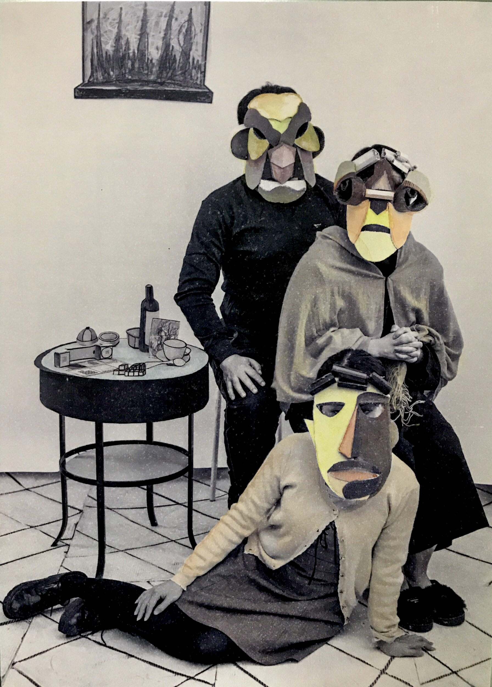
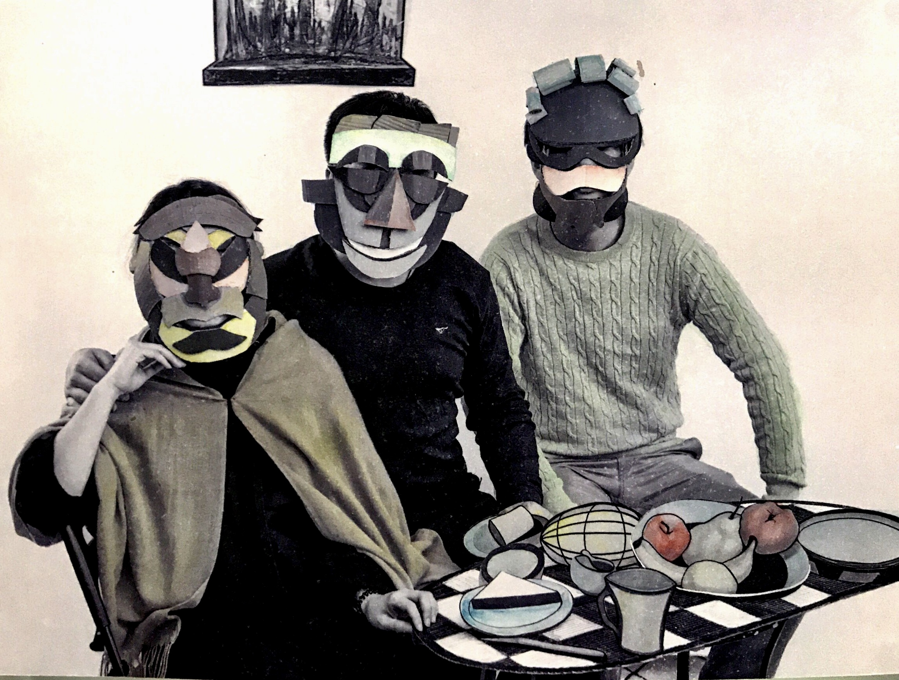
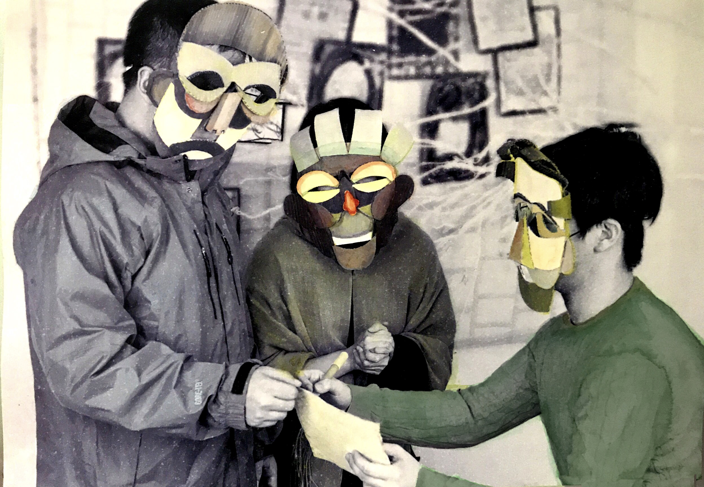
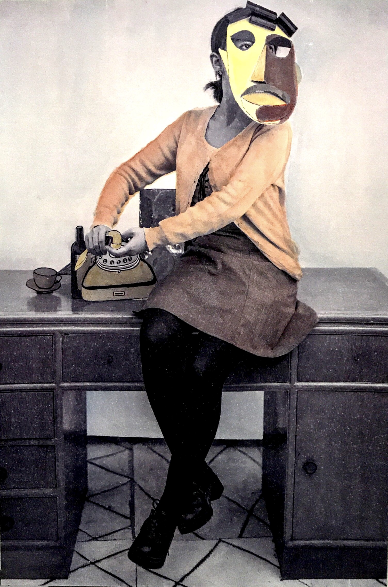
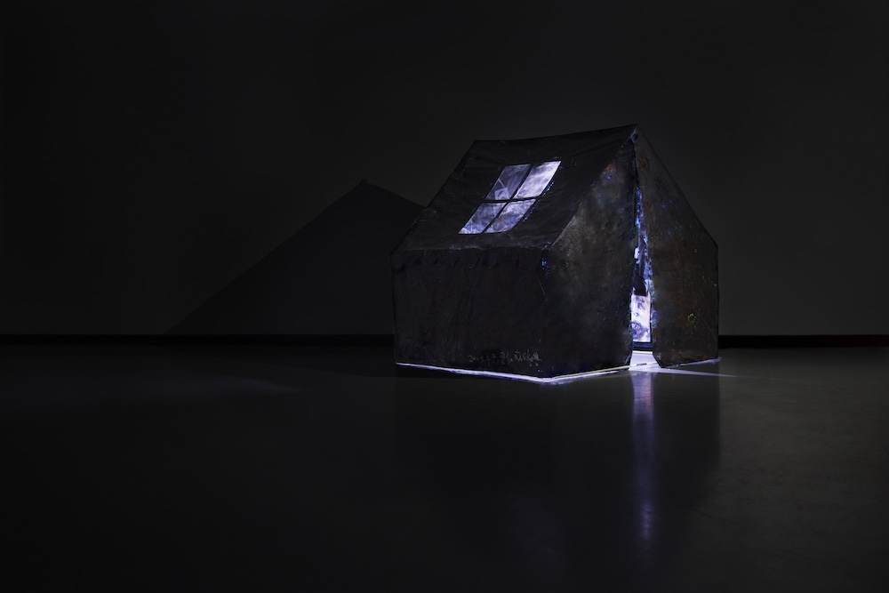
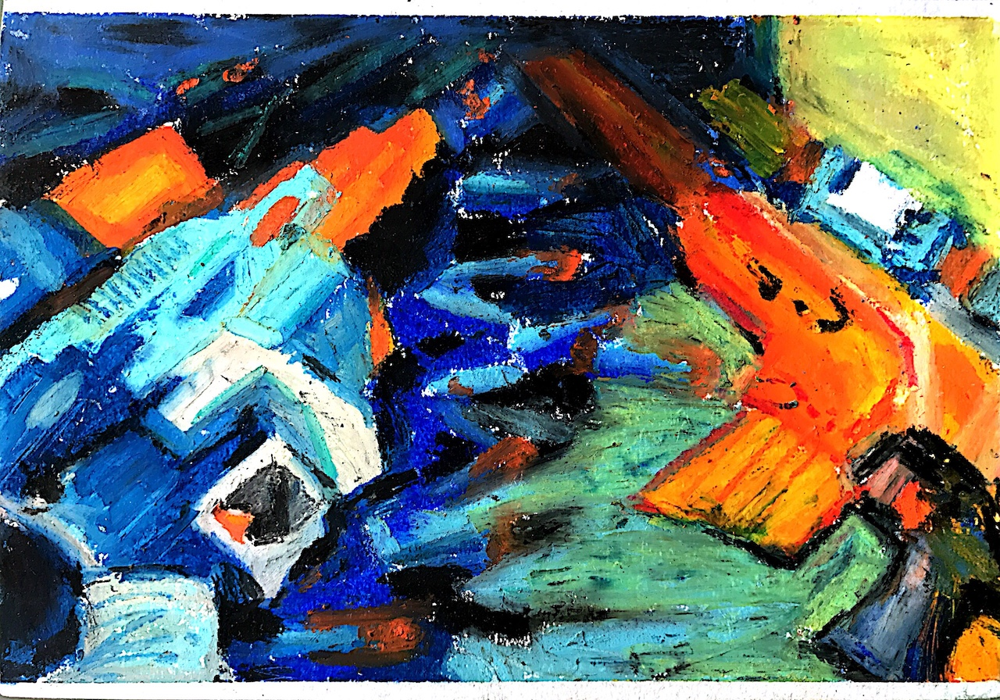
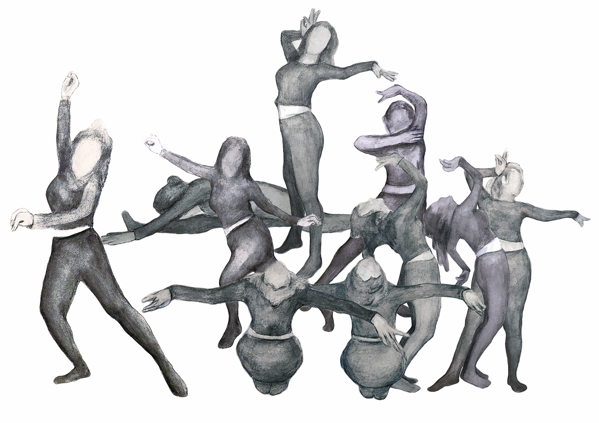

Replace with your image
Life Drawing / 写生
Authentic Movement Drawing
Live Performance / 现场表演




逼婚 / Forced Marriage ↗ click to read

非典后遗症 / Pandemic ↗ click to read

男子气概 / Masculinity ↗ click to read

民族舞 / National Identity ↗ click to read
Body Archive
Homeless Collaboration / 流浪汉项目
Moving Image & Dance
回国三年 / Three Years in China
Performing the Art School
LADA — Live Art Development Agency, London
More to come — the future is still being written
About
Vicky Yijia Tang (唐藝嘉) is an artist and movement researcher undertaking a practice-as-research PhD at UAL, working with improvisation, drawing, and embodied movement through a methodology she describes as Improvised Moving–Drawing (IMD).
Trained in life drawing, gestural mark-making, and calligraphy, and in movement practices including Tai Chi, Authentic Movement, and Skinner Releasing Technique, she works at the threshold between visual art and somatic practice.
The research investigates how the material qualities of mark-making register affective embodied experience at an infra-linguistic level — what the body inscribes before language arrives.
Get in touch
For collaborations, residencies, performances, or research conversations
yijia.tang@network.rca.ac.uk